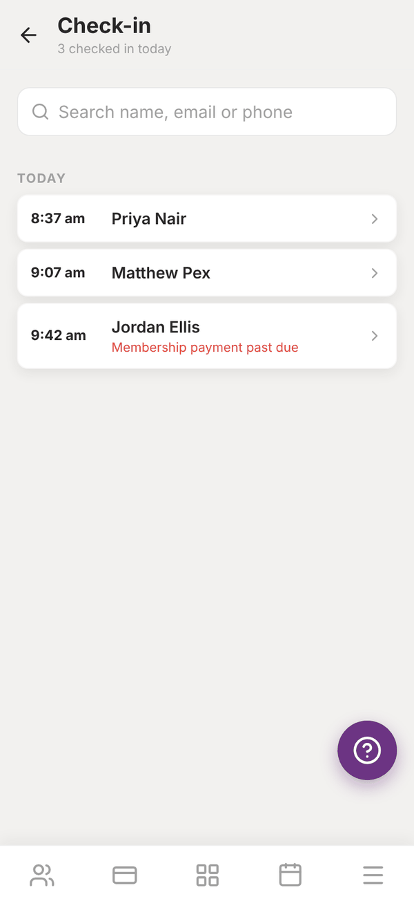
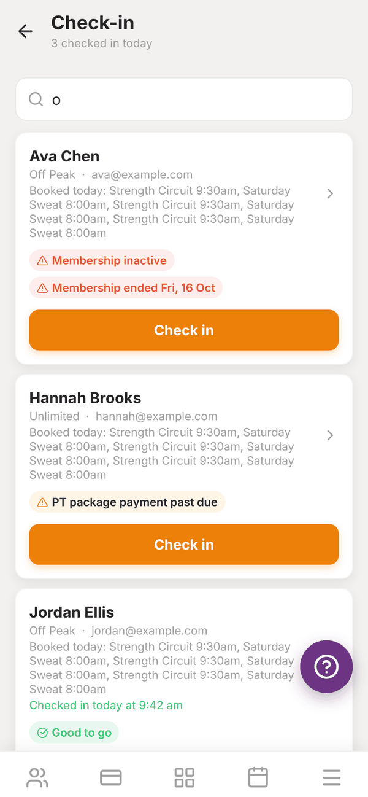
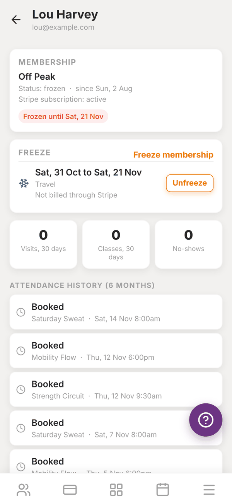

Totality for gym owners
Front desk check-in, member status and freezes
Check members in at the door with payment and membership warnings, see a member's attendance, and freeze or unfreeze a membership.
Front desk check-in#
Check-in is for the front desk. Search for a member, see straight away if anything is wrong with their membership or payments, and check them in. It is made for the gym owner or admin login, so keep it open on the front desk tablet or computer (totalityapp.com.au works well).
Open the Members tab, then Front desk check-in.


- Type in Search name, email or phone.
- Each member shows their membership, email, any classes they have booked today, and their warnings.
- Tap Check in. If they already checked in today it says Check in again.
The list under Today shows everyone checked in, with the time, and the header counts them ("3 checked in today").
Warnings at the door#
| Warning | Colour | What happens |
|---|---|---|
| Good to go | Green | Nothing wrong |
| Frozen until Sat, 21 Nov / Membership frozen | Red | Blocks: you are asked "Check in anyway?" |
| Membership inactive / cancelled | Red | Blocks: you are asked to confirm |
| Membership ended Fri, 16 Oct | Red | Blocks: you are asked to confirm |
| Membership payment past due | Orange | Checks in, and the warning is saved with the check-in |
| PT package payment past due | Orange | Checks in, and the warning is saved with the check-in |
| Freeze starts ... / No membership plan on file | Grey | For your information only |
Warnings are saved on the check-in, so you can see later who came in with a payment problem. To sort out a payment, see Failed payments.
Tap a member's name (the arrow) to open their member status.
Member status#
Member status shows one member's membership, freezes and attendance. Open it from check-in, or from the member's page with Membership, freeze and attendance.

- MEMBERSHIP: their plan, status, start date, whether it is billed through a Stripe subscription, and any warning.
- FREEZE: current and upcoming freezes.
- Three counts: Visits, 30 days, Classes, 30 days and No-shows.
- Attendance history (6 months): front desk check-ins, class bookings (attended, no-show, booked, cancelled) and any attendance you imported.
Freeze a membership#
Freeze a member's membership when they are injured, travelling or taking a break.
- Open the member's status and tap Freeze membership.
- Pick the Start date.
- Pick an End date (optional). Leave it empty, or tap Clear end date, to keep them frozen until you unfreeze them.
- Add a Reason ("Injury, travel, ...").
- Tap Freeze.
While frozen:
- The member cannot book classes.
- Check-in shows a red Frozen warning.
- If they pay through a Stripe subscription with your gym, their billing is paused from the start date, and starts again the day after the end date. A future freeze pauses billing automatically on its start date.
The message after you save tells you what happened, for example "The member cannot book classes while frozen. Stripe billing is paused." A membership not paid through Stripe shows Not billed through Stripe: the freeze still stops class bookings, but there is no payment to pause.
Unfreeze#
Tap Unfreeze next to the freeze and confirm. Stripe billing starts again straight away.
Questions#
Do frozen members get charged?
Not for the frozen time, if they pay through a Stripe subscription with your gym. Billing is paused (the invoices for that time are skipped), and starts again after the end date or when you unfreeze.
Can a member freeze their own membership?
No. Freezes are set by you.
Can trainers use front desk check-in?
No. Check-in is in the gym owner or admin login. Trainers who try see "Only the gym admin can use check-in."
Can members check themselves in with a QR code?
Not at the moment. Check-in is done by staff at the front desk.